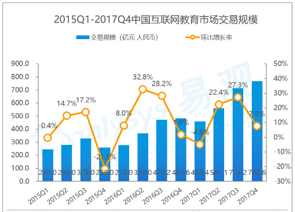
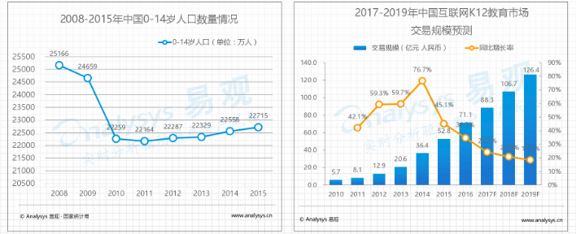
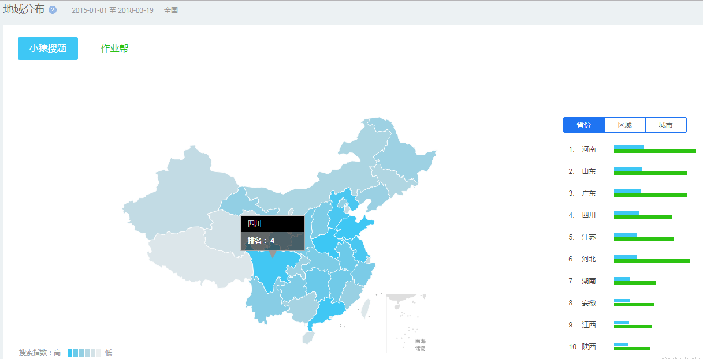
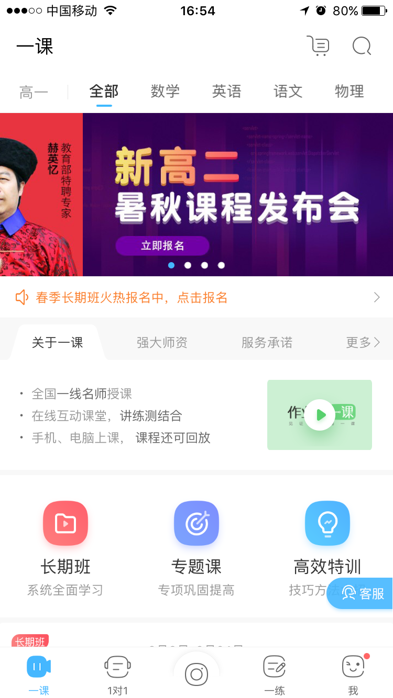
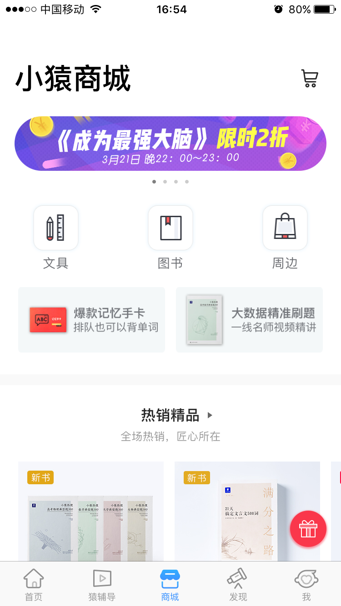
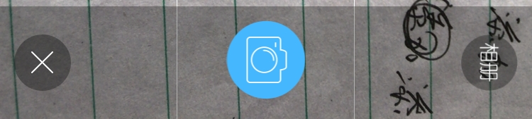
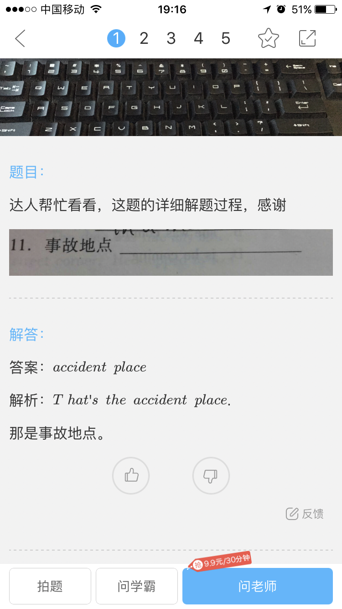
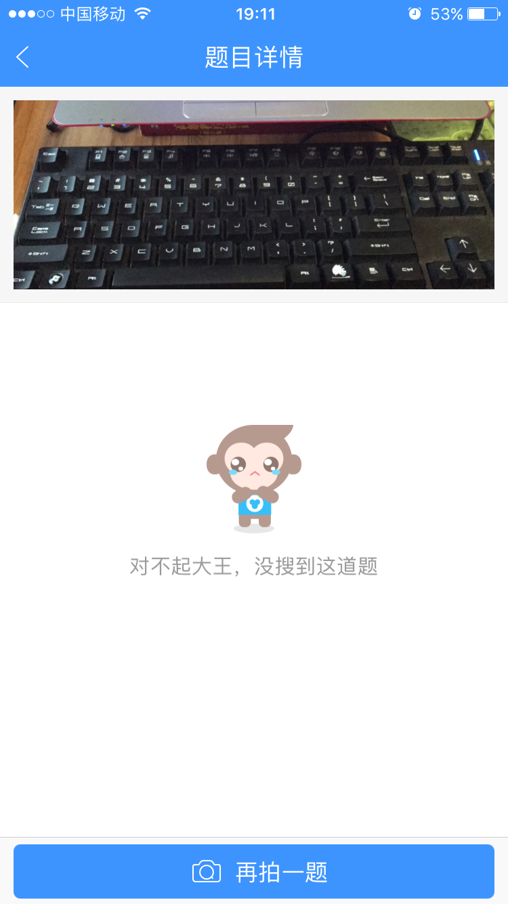
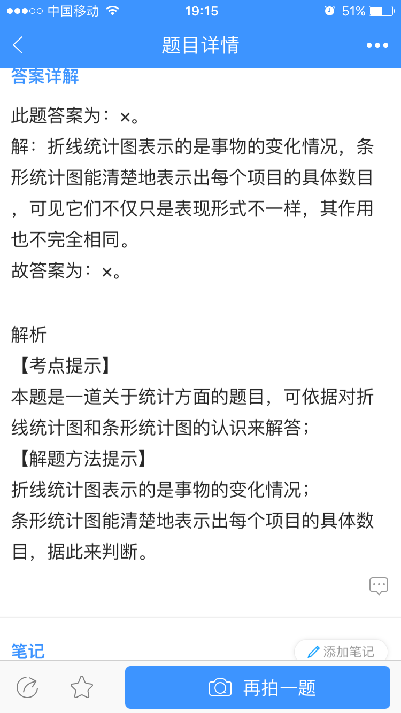

分享人：王佳妮
目录
一、政策背景
二、目前形势
三、竞品分析
四、展望
五、更多讨论
2010年起中共中央、国务院印发了《国家中长期教育改革和发展规划纲要（2010-2020年）》，首次提出“信息技术对教育发展具有革命性影响，必须予以高度重视”
随后几年，教育部印发了《教育信息化十年发展规划（2011-2020年）》，提到要将教育信息化落实到执行层面，明确将教育信息化成果列入工作指标
2012年9月5日刘延东副总理（时任国务委员），在全国教育信息化工作电视电话会议上提出：“十二五”期间，要以建设好“三通两平台”为抓手，也就是“宽带网络校校通、优质资源班班通、网络学习空间人人通”，建设教育资源公共服务平台和教育管理公共服务平台。从此打开了中国在线教育的大门
根据Analysys易观监测数据显示，2017年第4季度中国互联网教育市场整体交易规模达768.6亿元人民币，环比上涨7.6%，同比增长59.6%
根据国家统计局数据显示，我国2015年0-14岁人口数量为22715万人，庞大的学生基数奠定用户基础。2016年互联网K12教育市场交易规模达71.1亿元，预计到2019年达到126.4亿元
互联网K12教育：以发生在儿童、中小学年龄段的在线教育教学，其中主要满足学生以及部分教师人群的学习需求
（一）目前K12互联网教育主要有以下四种典型细分市场：
A.家教平台（好老师，请他教）
B.题库（易题库，猿题库）
C.在线教学（高能100，酷学习）
D.作业答疑（作业帮，学霸君，小猿搜题）
（二）小猿搜题&作业帮
1.产品背景
小猿搜题：猿题库旗下的一款拍照搜题产品，在拍照搜题市场稳居前三。 截至2017年6月活跃用户超过1400万
曾创造上线一个月200万用户的骄人战绩。截至目前，猿题库已经拿到e轮1.2亿美元融资，由华平投资和腾讯领投
作业帮：由百度内部团队孵化的一个项目，在2015年9月正式独立运营。历经一年之后，到2016年9月，作业帮用户量已经突破1.75亿，截至2017年6月数据显示，月活跃用户达到3650万量级，占据拍照答题60%的市场份额，处于行业领先地位
已经拿到AB两轮融资，A轮融资在2015年9月2日由红杉和君联资本领投。并于2016年中完成B轮6000万美元融资，由纪源资本和襄禾资本领投，A轮投资人跟投
2.用户画像
总结：
A.一线城市使用较多
B.女性明显多于男性
C.30-39岁的使用者较多
说明：
为什么是30-39岁的年龄占比最大？原因是家长的参与。中小学生的家长会主动寻找帮助孩子提升成绩的方法
3.盈利模式
共同特征：以拍照搜题的方式作为切入点和流量入口，吸引用户进行使用，通过分流为有需求和意向用户提供不同的服务，如“付费答疑”、“大班直播课程或录播课程”、“在线一对一教学”等。此外小猿搜题还试水“电商变现模式”
作业帮：
1.一课，在线直播模式
2.一对一，在线一对一课程辅导时间付费方式，花钱买时间
小猿题库：
1.给猿辅导留倒流入口
2.商城、文具、图书、课程以及周边，其中课程类目较少未成体系，偏碎片化
4.3核心功能分析
4.3.1拍题界面按钮区域设计分析
样式介绍：采用了左中右的布局，拍照按钮在中央位置，左右分别是“相册”和“退出”，或者相反。作业帮采用了全屏半透的拍题模式，小猿搜题采用了全屏全透的模式
样式分析：透明样式，做到相机全屏显示，这样做的好处是能够延续用户使用相机的习惯
交互体验：作业帮和小猿搜题在交互上并无太大差别，作业帮有一个旋转90度的按钮，作用不大
4.3.2搜题结果页面分析
  返回结果：作业帮5；小猿搜题3;
反馈项目总体相同：题干、解答、分析;
收藏分享：作业帮左上方；小猿搜题左下方
再拍一题：作业帮左下方；小猿搜题右下方
其他：作业帮可以问学霸，提供了老师答疑，为有需求的用户提供更多的解决方法，同时向变现引流。设有新用户特惠9.9元体验课，诱导和培养付费用户；小猿搜题：没有向兄弟软件引流
（1）2018年-2020年中国互联网教育行业将呈现以下趋势：
1.移动化程度进一步深化，移动教育产品类型愈加丰富多样
2.理性多态布局，构建高效率高产业化能力的教育生态体系
3.技术不断创新升级，大规模个性化互联网教学应用场景成为可能
（2）存在痛点和困境：
1.准入门槛较低，但核心资源要求较高
2.用户获取难，获取成本较高
3.应试压力下，教学效果是用户关注重点
感谢大家观看
BY :王佳妮